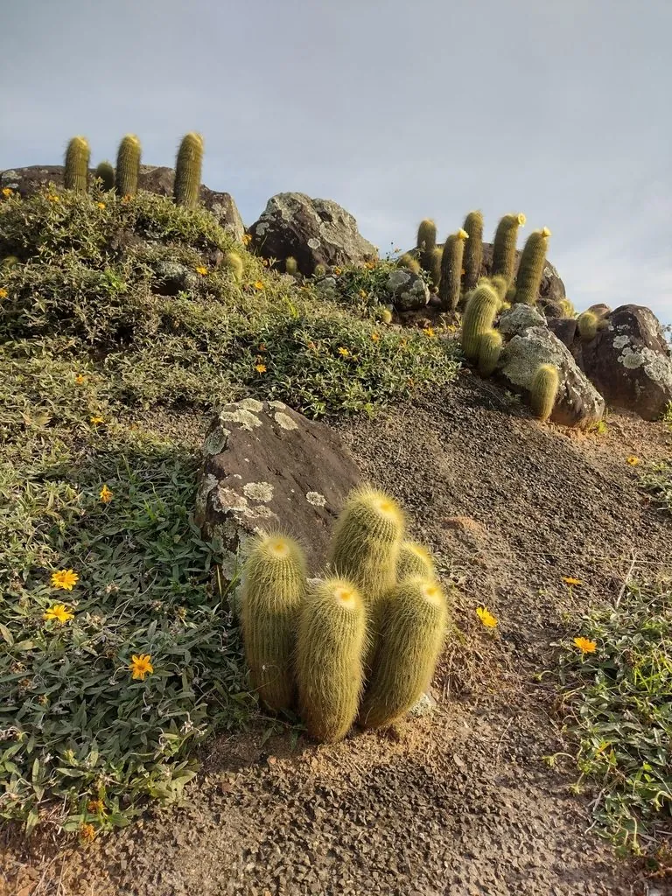

多肉植物 · 植物界
黄翁 Parodia leninghausii

仙人掌科锦绣玉属多年生肉质植物，柱状球体密被金黄色软刺，顶端开出黄色漏斗状花，是经典的仙人球类观赏品种。
- 分类
- 门被子植物门纲木兰纲目石竹目科仙人掌科属锦绣玉属
- 栖息环境
- 原产巴西南部山地，栽培需充足光照、干燥通风
- 地理分布
- 原产巴西南部；中国各地作为观赏仙人球栽培
- 保护级别
- 暂无评估；栽培观赏植物，不涉及保护等级
物种志
黄翁为仙人掌科锦绣玉属多年生肉质植物，幼时球形，老时圆柱状，高可达六十厘米，直径约十厘米。棱多数，刺座密集，周刺金黄色至淡黄色、细软，长约一厘米，植株整体呈金黄色。花生于球体顶端，花冠漏斗状，黄色，花期夏季；浆果球形，成熟时红色，种子细小。
黄翁原产巴西南部，中国各地作为观赏仙人球广泛栽培。它喜光、耐旱，春秋为生长旺季，夏季高温时需适度遮阴；适宜疏松透气、排水良好的颗粒基质，忌积水和闷热。球体金黄、刺软不扎手，是仙人球中最受欢迎的品种之一；成年植株开花时金球黄花，十分醒目。繁殖以播种和嫁接为主。
形态与习性
- 株型幼球状，老时柱状
- 球径直径约 10 cm，高可达 60 cm
- 花期夏季，花黄色漏斗状
- 光照喜光，夏季适度遮阴
- 水分耐旱，干透浇透
- 土壤疏松排水良好的颗粒土
- 主要用途仙人球盆栽观赏
趣味知识
- 黄翁的金黄色软刺密生于球体，远看像一颗毛茸茸的金色小球。
- 它幼时圆球状，随着年龄增长逐渐长成圆柱形，可高达六十厘米。
- 黄翁的花开在球体顶端，黄色漏斗状花朵与金刺相互映衬。